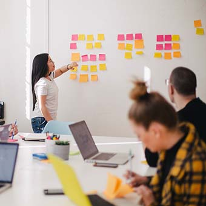
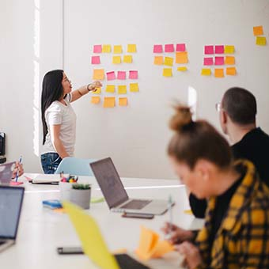

What can we do for our planet?
In 2016, we were one of the first Australian companies to embrace the UN Sustainable Development Goals, by using them to underpin our corporate responsibility strategy. These 17 goals provide a blueprint to put the world on a sustainable path to 2030 and address massive economic, social and environmental challenges.

In action Directly SDGs


PROGRESS OF GOAL 4 : QUALITY EDUCATION
Despite the considerable progress on education access and participation over the past years, 262 million children and youth aged 6 to 17 were still out of school in 2017, and more than half of children and adolescents are not meeting minimum proficiency standards in reading and mathematics. Rapid technological changes present opportunities and challenges, but the learning environment, the capacities of teachers and the quality of education have not kept pace.
PROGRESS OF GOAL 5 : GENDER EQUALITY
Despite the considerable progress on education access and participation over the past years, 262 million children and youth aged 6 to 17 were still out of school in 2017, and more than half of children and adolescents are not meeting minimum proficiency standards in reading and mathematics. Rapid technological changes present opportunities and challenges, but the learning environment, the capacities of teachers and the quality of education have not kept pace.

 

PROGRESS OF GOAL 7 : AFFORDBLE AND CLEAN ENERGY
Despite the considerable progress on education access and participation over the past years, 262 million children and youth aged 6 to 17 were still out of school in 2017, and more than half of children and adolescents are not meeting minimum proficiency standards in reading and mathematics. Rapid technological changes present opportunities and challenges, but the learning environment, the capacities of teachers and the quality of education have not kept pace.


PROGRESS OF GOAL 11 : SUSTAINABILE CITIES AND COMMUNITIES
Despite the considerable progress on education access and participation over the past years, 262 million children and youth aged 6 to 17 were still out of school in 2017, and more than half of children and adolescents are not meeting minimum proficiency standards in reading and mathematics. Rapid technological changes present opportunities and challenges, but the learning environment, the capacities of teachers and the quality of education have not kept pace.